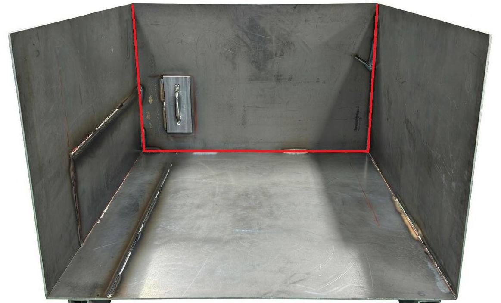
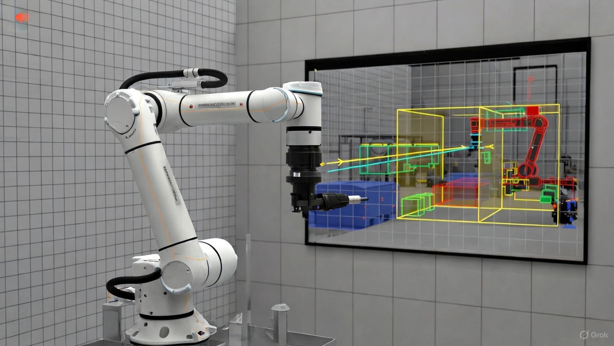

A-500 Robot Debugger
2026.01.06
ROBOT STATUS
RUNNING
LATENCY
11ms
CPU LOAD
24.5%
Connected: 192.168.1.10
任务管理
运动控制
模板管理
工艺设置
系统诊断
Admin CX
高级用户登录
切换到手机版
切换到电脑版
用户设置
退出登录
Camera Online: WTS-2022 (2.0MP)

Auto-scanning enabled
仿真环境已加载
机器人状态: 就绪

开始仿真
暂停
停止
重置
焊缝可视化预览
保存修正
撤销更改
恢复更改
完成编辑
校正路径
微调起点
调整长度
裁剪焊缝
手动绘制
当前编辑:
焊缝#WM-2026-001
编辑模式:
校正路径
精度:
98.2% → 99.5%
焊接工艺参数设置
保存参数
导出参数
导入参数
焊接电流 (A)
焊接电压 (V)
送丝速度 (m/min)
焊接速度 (mm/s)
气体流量 (L/min)
预送气时间 (s)
滞后关气时间 (s)
引弧电流 (A)
设备健康状态
刷新状态
导出报告
CPU负载
24.5%
正常
内存使用
68.2%
正常
温度
42°C
正常
网络延迟
12ms
正常
CPU负载趋势 (过去1小时)
高级用户验证
×
工程师
开发者
请输入密码：